Bonjour!
Je suis Manu.
Pour 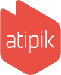 j'ai pensé qu'il serait adéquat de rédiger une candidature... atypique.
En lieu et place d'une lettre de motivation ou d'un portfolio, laissez-moi brièvement me présenter.
Je suis diplomé de l'EPFL.
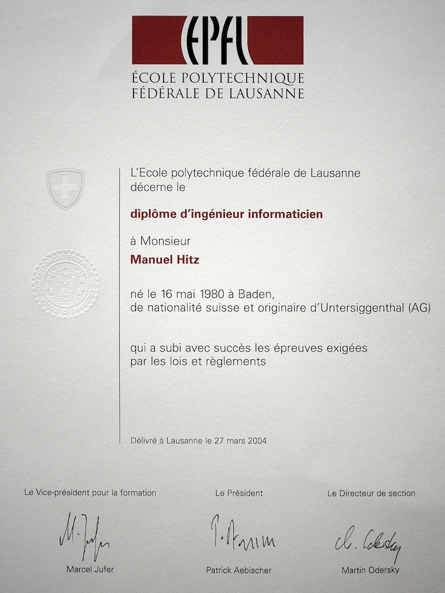
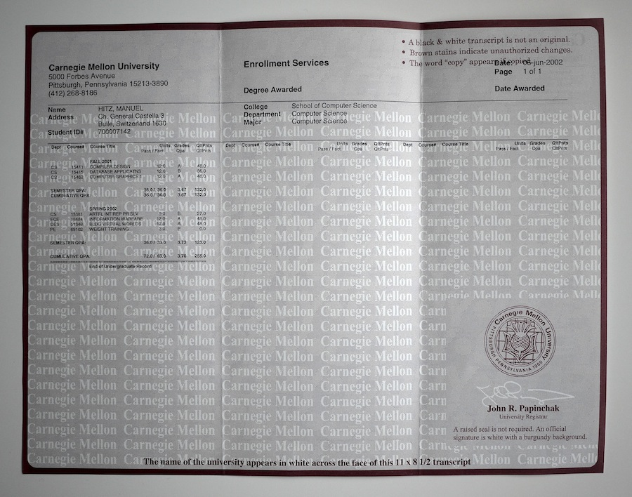
C'est d'ailleurs là-bas que j'ai suivi
le cours qui m'a le plus marqué, autant par le contenu que par
la personne qui l'a dispensé. Un cours finalement très atypique dans un cursus informatique.
J'ai été embauché par
ELCA Informatique à la sortie de l'EPFL. Au cours des 8 années que j'y ai passées, j'ai pu travailler sur passablement de projets, essentiellement dans le domaine de la billetterie.
En 2005, j'ai participé au développement d'un CMS propriétaire qui a notamment servi à gérer le site du Paléo avant que les solutions open-source comme Drupal n'arrivent à maturité.
En 1 mois, j'ai développé dans ce CMS une précédente version du site du GHI avec importation automatique des articles depuis leur outils de mise en page.
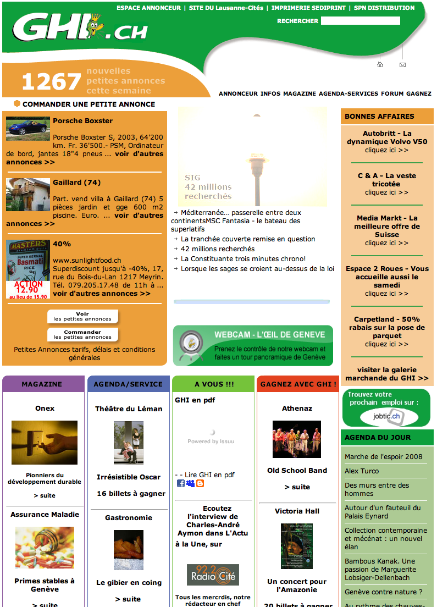
En 2006, j'ai développé un ticketshop que les clients pouvaient facilement personnaliser visuellement. Le système ressemblait finalement beaucoup à ce qui est possible aujourd'hui avec
Compass ou
Sass.
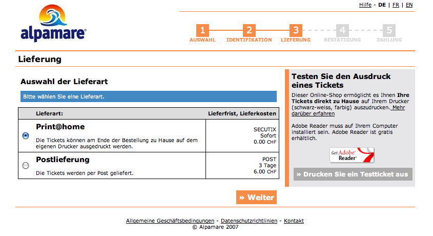
En 2007-2008, l'Opéra National de Paris nous a mandaté pour refaire leur système de billetterie. J'étais chargé de développer l'application web qui servirait aux guichetiers pour vendre toute l'offre de l'Opéra. Notre choix technologique s'était porté sur
ExtJS.
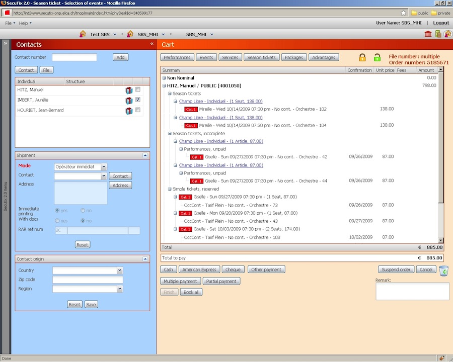
En 2010, je me suis lancé dans le développement d'une version allégée pour mobile de notre ticketshop avec
Sencha Touch. Comme pour le ticketshop de 2006, il fallait que nos clients puissent personnaliser le look.
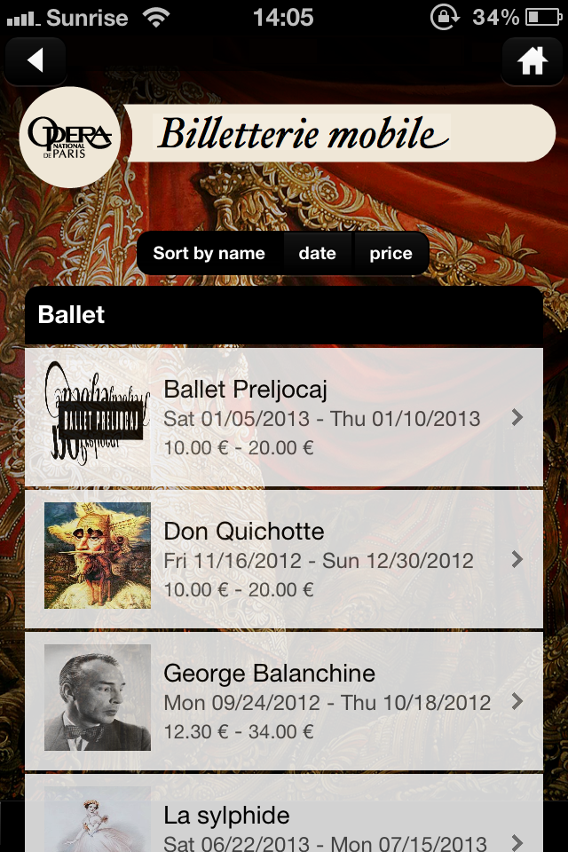
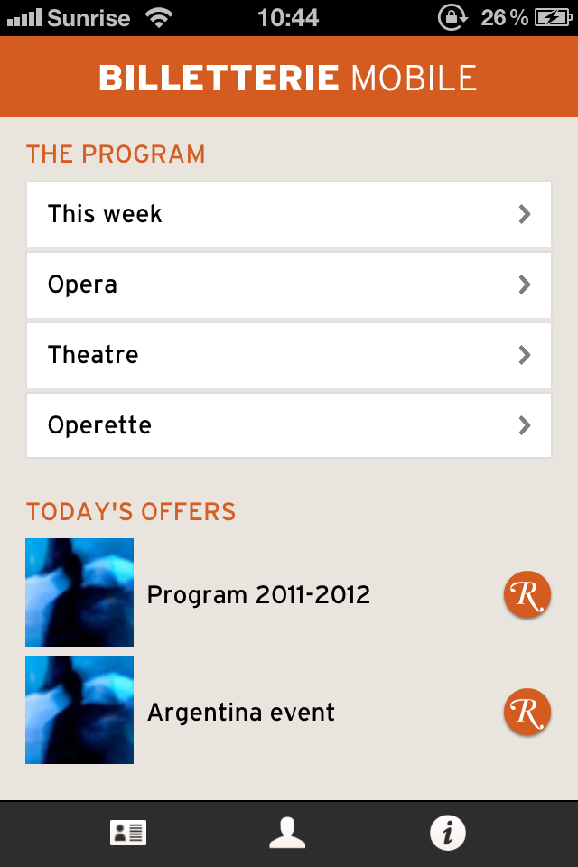
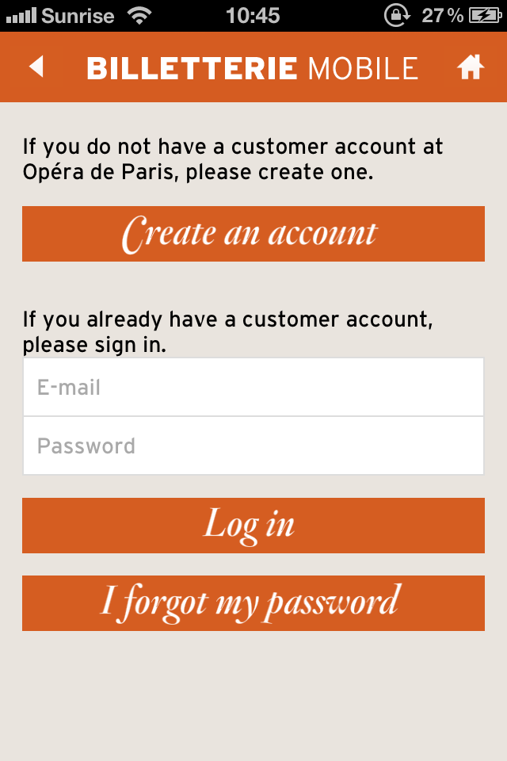
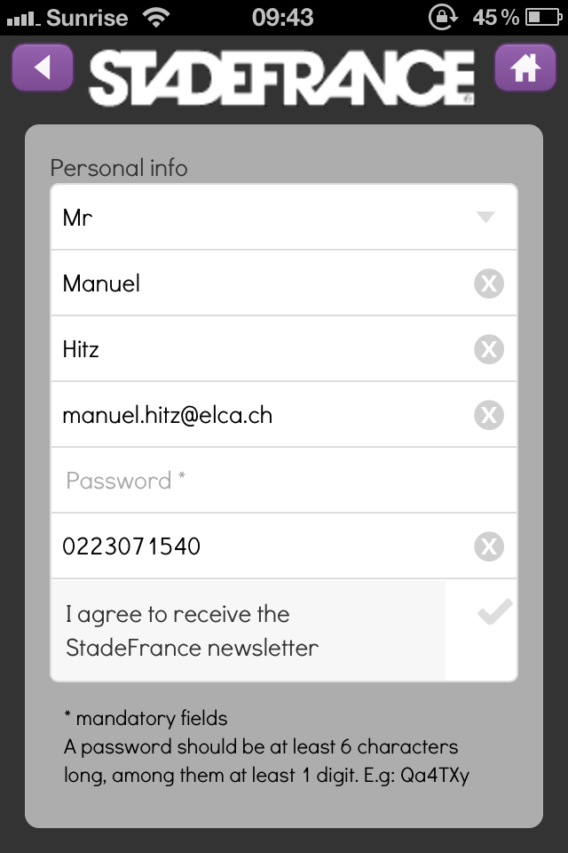
En 2012, j'ai renforcé l'équipe chargée de réécrire la partie frontale de notre ticketshop en responsive design. Nous avons tiré un maximum profit des nouveautés offertes par HTML5 et CSS3: web fonts, flexible box layout, text effects etc.
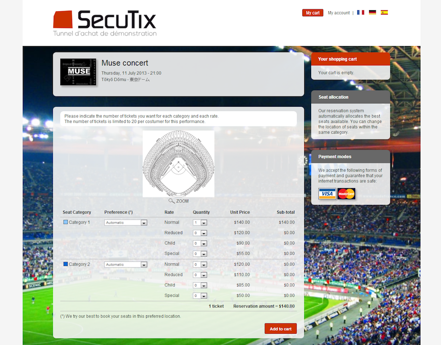
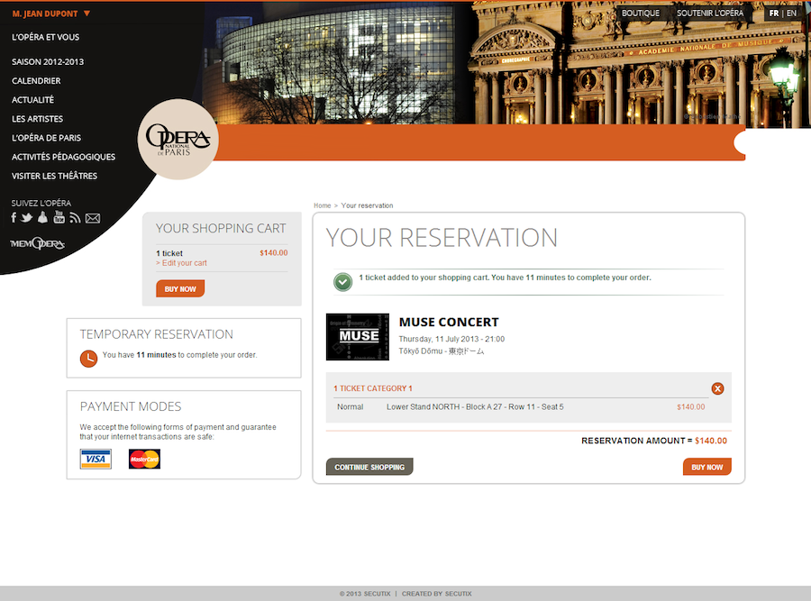
En 2006-2007, j'ai aussi créé des sites web pour des amis.
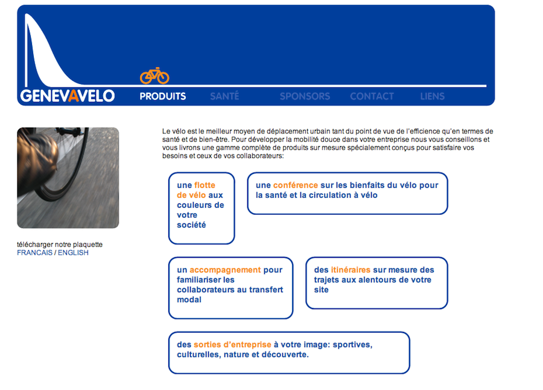
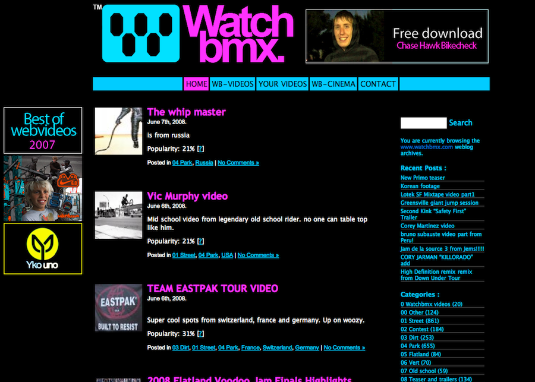
Stefan Sagmeister proposait dans un
TED talk de faire une année sabbatique tous les 7 ans.
Même si, contrairement à lui, mon projet est totalement personnel, j'ai décidé de quitter ELCA Informatique après 8 ans et de postuler dans
une entreprise de coursiers à vélo.
Je pédale depuis février dans tout le canton de Genève pour faire des livraisons entre banques, avocats, notaires, horlogers, hôpitaux, laboratoires, architectes, bureaux de design etc.
Le travail me plaît énormément et le changement temporaire est bienvenu.
Je profite de mon temps libre pour bouquiner des sujets qui m'intéressent: développement web mobile, typographie, infographie etc.
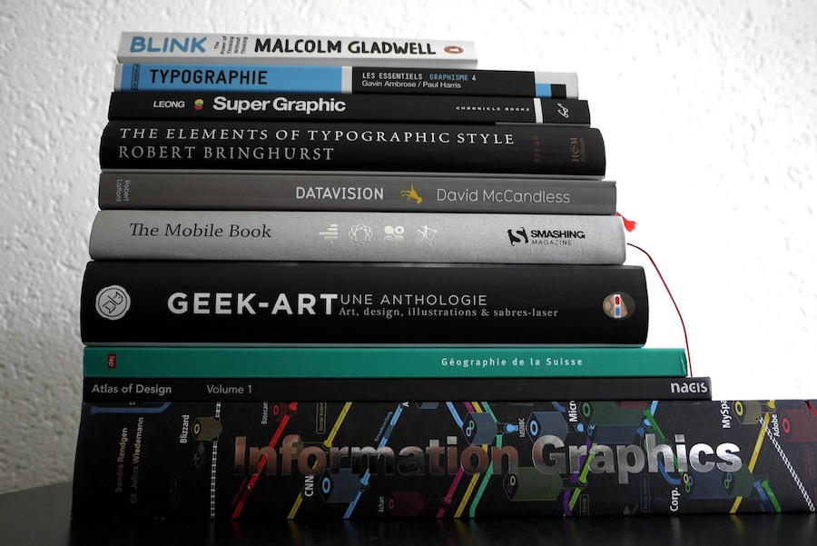
À court terme, je compte quitter mon emploi de coursier à vélo en décembre 2013 (négociable).
Puisque mon emploi actuel ne m'occupe qu'à 60% et avec le retour des jours maussades, je prévois de remettre à jour mes connaissances...
...notamment en lisant les centaines d'articles qui se sont accumulés depuis quelques mois dans ma liste de lecture.
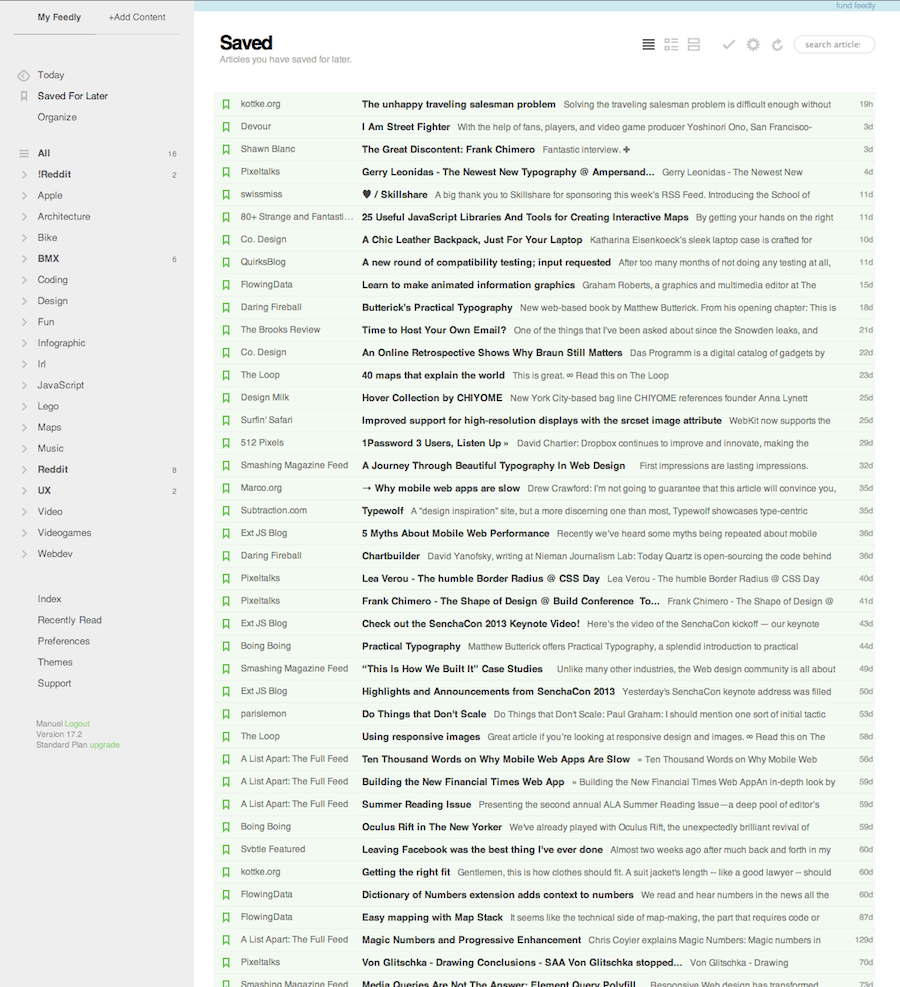
Je prévois également de recréer ma page web personnelle, ainsi que de finaliser ou simplement redonner un coup de jeune à plusieurs des projets personnels que j'ai commencés ces années passées.
Je serais ravi de rejoindre votre équipe en tant que développeur web. La petite taille de l'entreprise me motive énormément, car j'ai toujours apprécié être proche des autres métiers web que le développement pur.
Merci pour votre attention :)
Merci pour votre attention :)